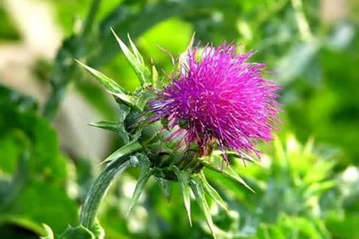

Efsaneden Mikroskoba: Meryemana Dikeninin Büyüleyici Dünyası Yol kenarlarında sıkça rastladığımız, çoğu zaman sadece sıradan bir ot sanıp yanından geçip gittiğimiz Meryemana dikeni (ya da en yaygın adıyla Deve dikeni), hem zengin bir mitolojik anlatıya hem de mikroskop camının ardında gizlenen harika bir doğa mühendisliğine sahip. 1. Beyaz Beneklerin Kadim Efsanesi Halk arasında "Deve dikeni" olarak bilinen bu bitkiye "Meryemana dikeni" denmesinin kökeni köklü bir efsaneye dayanır. Anlatılanlara göre; Hz. Meryem’in sütü bu mütevazı bitkinin yeşil yaprakları üzerine damlamış ve o günden sonra bitkinin yapraklarında belirgin beyaz benekler ile damarlar oluşmuştur. Yine bu efsanevi dokunuşla birlikte bitkinin şifalı özellikler kazandığına inanılır. Nitekim bu inanç haksız da sayılmaz; tohumları ve sapları yüzyıllardır bitkisel tıpta (fitoterapi) özellikle karaciğer sağlığını desteklemek amacıyla aktif olarak kullanılmaya devam ediyor. 2. Mikroskop Altında Bir Tohum: Trikomlar ve Mikro Ölçek Peki, efsanelere konu olan bu şifalı bitkinin tohumu mikro dünyada nasıl görünüyor? Tohumu lam üzerine koyup merceğin altına yerleştirdiğimizde bizi büyüleyici detaylar karşılıyor. Trikomlar (Tüyler / Kıllar): Tohumun çevresini saran tüy benzeri yapılar olan trikomlar, adeta doğanın tasarladığı mikro paraşütlerdir. Bu yapılar sayesinde tohum, hafif bir rüzgârda bile ana bitkiden çok uzaklara süzülerek yeni topraklara ulaşabilir. Boyut ve Ölçek: Tohumun kendi ölçeği ise oldukça şaşırtıcı. Trikomlarından tamamen arındırıldığında gövde uzunluğu yalnızca 2 mm civarında kalıyor. Çapı ise mikroskop ölçeğinde bile kolayca ölçülemeyecek kadar mikro düzeyde bir narinliğe sahip. Sonuç Doğada yanından geçip gittiğimiz tek bir Deve dikeni tohumu bile, kadim efsanelerden mikroskobik boyutlardaki uyum ve aerodinamiğe kadar derin bir hikaye taşıyor.